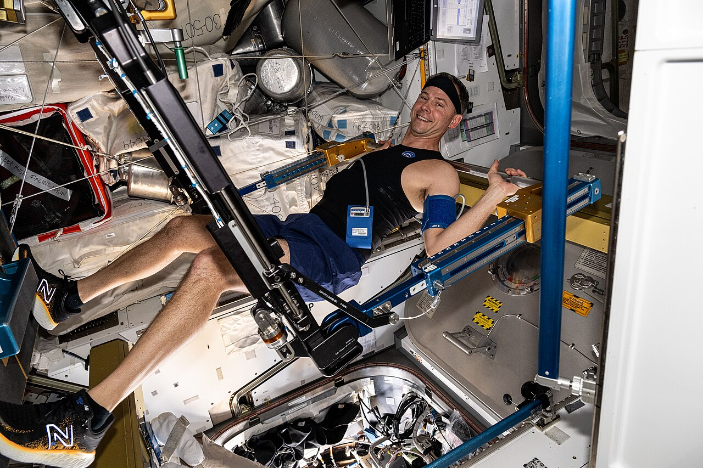

Muscle atrophy
Postural muscles fade first — the calf and back muscles you didn't realise you were using until they stop working in 1 g again.
Skeletal muscle is a use-it-or-lose-it tissue. The body is constantly weighing the metabolic cost of maintaining a muscle against the demand on it. In microgravity, the demand on the postural muscle groups — calf (soleus, gastrocnemius), back (paraspinals, erector spinae), and quadriceps — collapses overnight. The body stops maintaining them. Within two weeks, type-I (slow-twitch, postural) fibres are visibly smaller; within three months, cross-sectional area in the calves drops 15–20% without countermeasures.
Type-II (fast-twitch, locomotor) fibres in the arms and shoulders fare somewhat better because astronauts use them constantly to translate around the station. But even those decondition. The Skylab and early Mir data showed astronauts so weak after long missions that they couldn't lift their own legs against gravity for the first hour back.
Modern ISS countermeasures push back with two hours of resistance + cardio per day: ARED for legs, back, and core (squats, deadlifts, calf raises at up to 1100 N of resistance); the T2 treadmill for cardiovascular conditioning (with a harness providing about 70% bodyweight loading); and the cycle ergometer as backup. Even with all that, 6-month crew return with measurable strength deficits in the postural groups. A Mars trip — multi-year, with periods of reduced exercise during cruise — implies meaningfully greater deconditioning than anything ISS has yet measured.
Open questions: whether artificial gravity in transit (a slowly rotating habitat) would defeat this, and how partial gravity (Moon at 0.17 g, Mars at 0.38 g) compares to microgravity. We have ISS data for 0 g and Earth data for 1 g — the surface-physiology gap in between is one of the loudest unknowns for human Mars planning.

SEE IN THE APP
- /iss ARED + treadmill modules on the ISS Explorer station panel